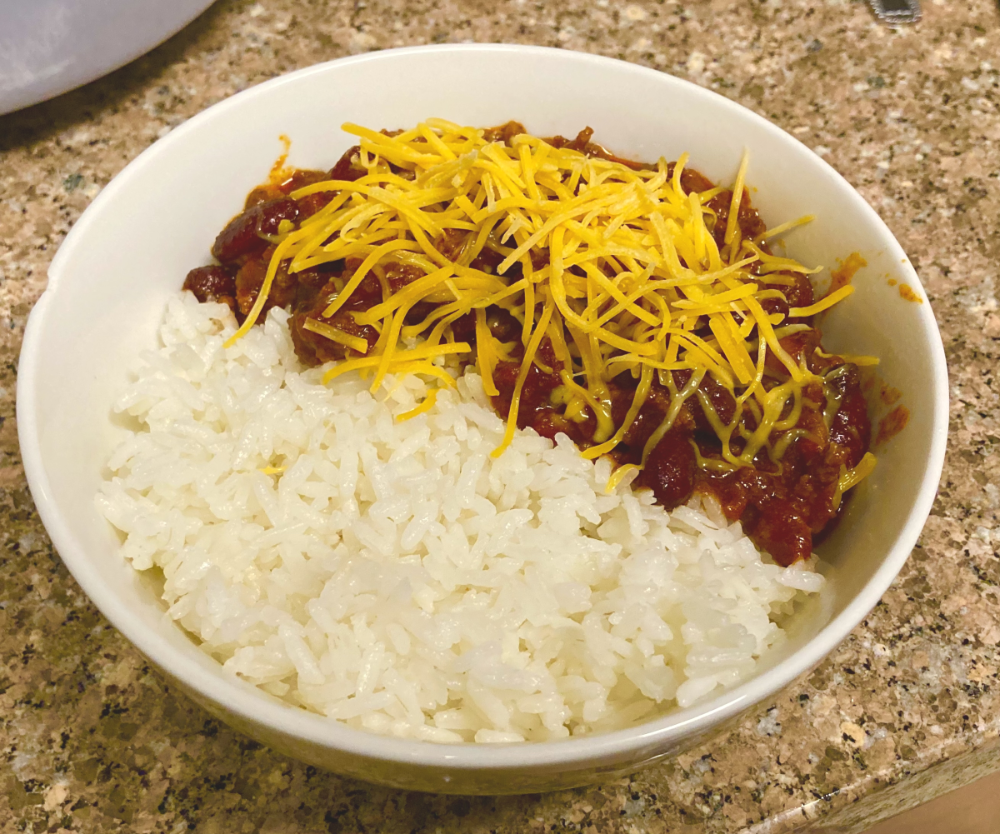

back
chili
this stuff is good with rice i promise

ingredients:
- 1lb ground beef or ground whatever
- 1 yellow onion
- 1 green bell pepper
- 14.5oz (small) can of petite diced tomatoes
- 29oz (big) can of tomato sauce
- 15.5oz (small) can of dark red kidney beans
-
chili seasoning
- 2 tbsps chili powder
- 1 tsp ground cumin
- 1/2 tsp cayenne pepper
- 1/4 tsp garlic powder
- 1 tsp salt
- 1/4 tsp black ground pepper
steps:
- brown some beef on medium-high in a pot with a little bit of oil. i like to do everything in one pot, but it's up to you. break up the meat occasionally with a big spoon or something
- dice a yellow onion and a green bell pepper, then add it to the pot with teaspoon of salt. add a tiny bit of water if something seems like it's burning. you shouldn't have to though
- lower the heat to low, then pour in a small can of petite diced tomatoes and a big can of tomato sauce.
- add chili seasoning. you can just get a packet of this stuff at a grocery store, otherwise toss in 2 tbsps chili powder, 1 tsp ground cumin, 1/2 tsp cayenne pepper, 1/4 tsp garlic powder, 1 tsp salt, and 1/4 tsp black ground pepper. stir that all up
- drain a small can of dark red kidney beans and pour it in
- let cook on low for about 1 hour or until thick. enjoy. i recommend putting this with buttered rice it is insanely good